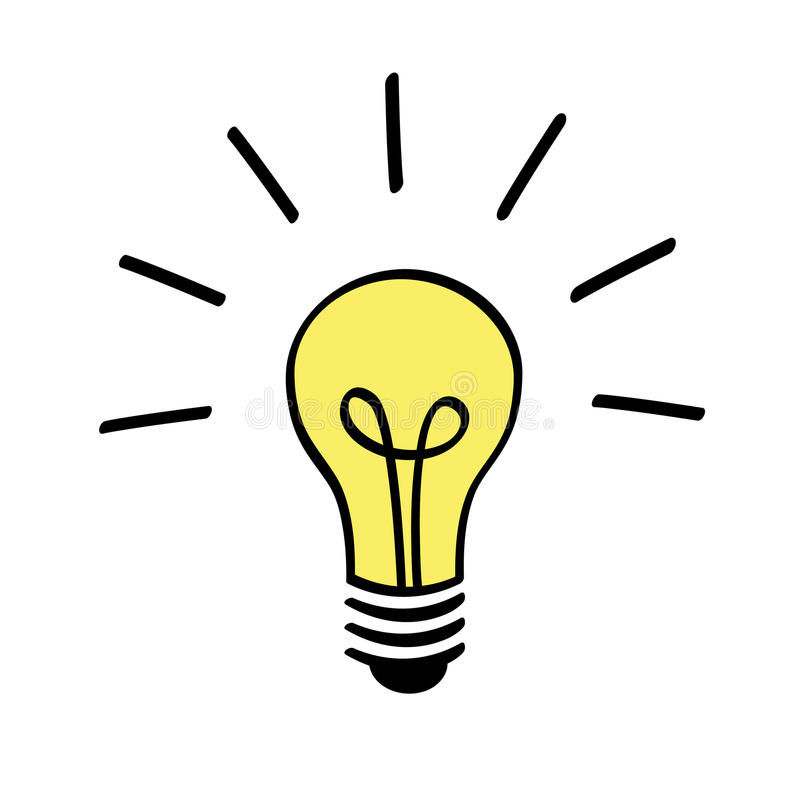

Personas
Interviewed students at the UM and synthesized to 3 personas.


Students are saying ......
- They want to get notified when their favorite foods are offered. None of them was willing to search the online menus.
- They would love an easier way of recording their diet other than writing down everything themselves.
- Sharing the photos of foods before eating is a ritual!
- Some of them want professional advice on diet.
Dining hall manager is saying ......
- They want to help students eat healthier and enjoy their favorites.
- They want to reduce food waste.